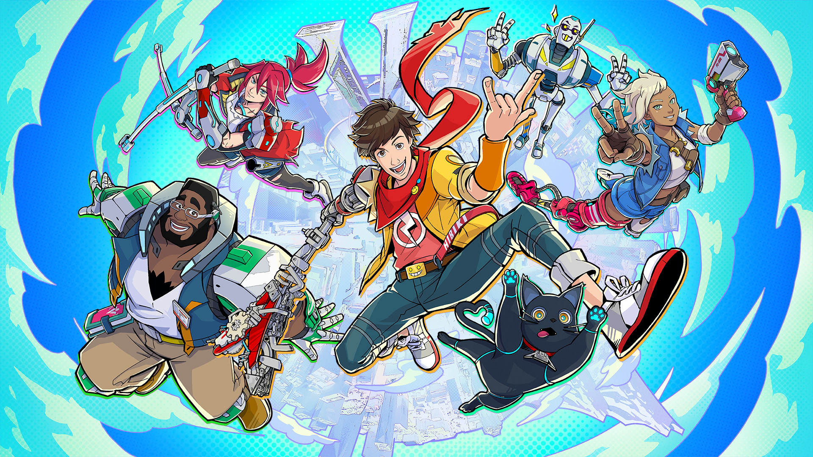

Hi-Fi RUSH se ve mejor en PS5 que en Xbox, según análisis de expertos

Hi-Fi RUSH llegó recientemente a PlayStation 5 gracias a un cambio de estrategia de Xbox en cuanto al lanzamiento de sus exclusivos. Todo indica que Tango Gameworks aprovechó la existencia del port para hacer unos cuantos retoques a su popular juego, que fue una de las sensaciones de 2023 con su debut original en Xbox Series X|S.
Esto te lo decimos ya que Digital Foundry hizo recientemente una análisis del juego para PS5 y llegó a la conclusión de que luce mejor respecto a la versión para Xbox. En concreto, parece que Tango Gameworks hizo algunos ajustes a las sombras, que lucen optimizadas en la consola de Sony.
De acuerdo con Digital Foundry, la versión de Hi-Fi RUSH para Xbox no tiene mucho que envidiar al port para PS5. Sin embargo, el medio asegura que el apartado de las sombras es visiblemente mejor en la versión para la consola de Sony.
El análisis revela que las sombras son idénticas en las versiones para Xbox y PC. Por tal motivo, el medio no comprende del todo a qué se debe la mejora. Digital Foundry reveló que la calidad de las sombras en general es superior en PS5.
"La mayor resolución de las sombras en PS5 permite una definición más precisa de las sombras en los detalles finos, como el patrón de malla de las vallas. No tenemos ninguna de las rupturas, el aliasing o la pixelación que vemos en la configuración inferior de Series X”, afirmó el medio.
Agregó que las optimizaciones se aplican a todas las sombras dinámicas del juego, incluyendo a las de los personajes y entornos. Especula que la mejora ausente en Xbox y PC puede deberse a un error común en dichos entornos de desarrollo. Sin embargo, también cree que no se trata de una simple casualidad.
Digital Foundry anota que no es la primera vez que ocurre esto, pues algo similar pasó con la versión de Xbox y PlayStation de Ghostwire: Tokyo. Por tal motivo, concluye que Microsoft debería exigir más a los estudios cuando se trata de lanzamientos multiplataforma, pues de esta forma podría garantizar la paridad y evitar diferencias entre ports.
“Cuando existe cierta susceptibilidad en torno a la idea de que los juegos exclusivos puedan saltar a plataformas rivales, lo lógico es garantizar que las versiones de Xbox sean tan eficaces y completas en todos los sentidos como las de PlayStation 5”, afirmó el medio.